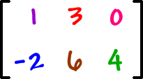

A sua tarefa é criar uma classe Matrix para representar uma Matriz. Deverá começar por usar a seguinte classe:
import java.util.Scanner;
class Matrix {
int data[][]; // os elementos da matriz em si
int rows; // numero de linhas
int cols; // numero de colunas
// construtor padrao de matriz
Matrix(int r, int c) {
data = new int[r][c];
rows = r;
cols = c;
}
// Ler os rows x cols elementos da matriz
public void read(Scanner in) {
for (int i=0; i<rows; i++)
for (int j=0; j<cols; j++)
data[i][j] = in.nextInt();
}
// Representacao em String da matriz
public String toString() {
String ans = "";
for (int i=0; i<rows; i++) {
for (int j=0; j<cols; j++)
ans += data[i][j] + " ";
ans += "\n";
}
return ans;
}
}
Deverá acrescentar os seguintes métodos à classe:
Um exemplo de utilização seria:
import java.util.Scanner;
class TestMatrix {
public static void main(String[] args) {
Scanner stdin = new Scanner(System.in);
Matrix m1 = Matrix.identity(5);
System.out.println(m1);
Matrix m2 = new Matrix(stdin.nextInt(), stdin.nextInt());
m2.read(stdin);
System.out.println(m2);
Matrix m3 = new Matrix(stdin.nextInt(), stdin.nextInt());
m3.read(stdin);
System.out.println(m3);
Matrix m4 = new Matrix(stdin.nextInt(), stdin.nextInt());
m4.read(stdin);
System.out.println(m4);
Matrix m5 = m1.transpose();
System.out.println(m5);
Matrix m6 = m2.transpose();
System.out.println(m6);
Matrix m7 = m2.sum(m3);
System.out.println(m7);
Matrix m8 = m2.multiply(m4);
System.out.println(m8);
}
}
Se o programa anterior for alimentado com o input:
3 5 1 2 3 4 5 6 7 8 9 10 11 12 13 14 15 3 5 6 7 8 9 10 1 2 3 4 5 11 12 13 14 15 5 4 1 2 2 1 3 4 4 3 5 6 6 5 7 8 8 7 9 10 10 9 |
Deverá produzir o output:
1 0 0 0 0
0 1 0 0 0
0 0 1 0 0
0 0 0 1 0
0 0 0 0 1
1 2 3 4 5
6 7 8 9 10
11 12 13 14 15
6 7 8 9 10
1 2 3 4 5
11 12 13 14 15
1 2 2 1
3 4 4 3
5 6 6 5
7 8 8 7
9 10 10 9
1 0 0 0 0
0 1 0 0 0
0 0 1 0 0
0 0 0 1 0
0 0 0 0 1
1 6 11
2 7 12
3 8 13
4 9 14
5 10 15
7 9 11 13 15
7 9 11 13 15
22 24 26 28 30
95 110 110 95
220 260 260 220
345 410 410 345
|
Se submeter no Mooshak deverá apenas submeter a classe Matrix. O Mooshak irá chamar criar várias instâncias da sua classe usando o construtores definido e irá fazer uma série de testes aos métodos por si implementados (como mostrado no exemplo de utilização). É garantido que os métodos são chamados de forma correcta (os argumentos fazem sentido e não geram excepções).
Conteúdo de Fernando Silva (DCC/FCUP), migrado de dcc.fc.up.pt/~fds/aulas/EDados/2526/praticas/problems/prob187.html.